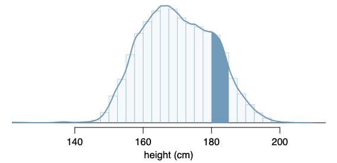
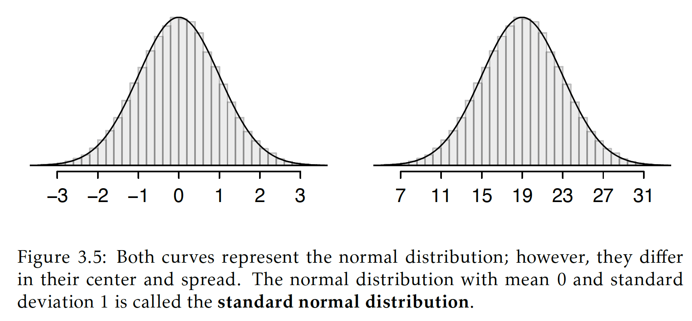
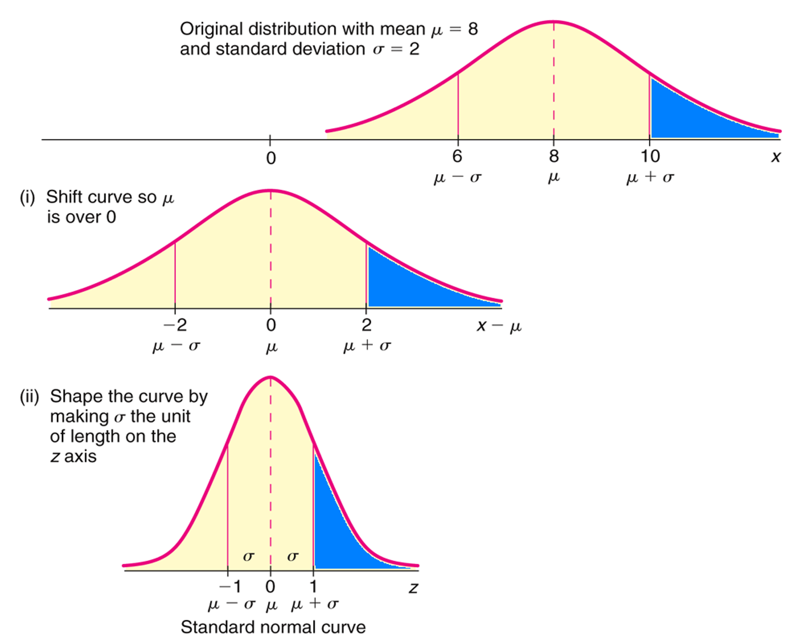
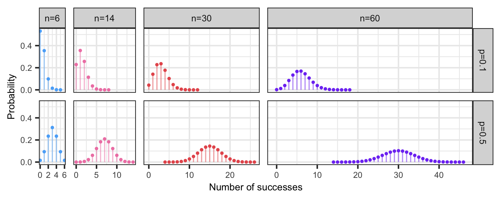

Lesson 6: Normal distribution
TB sections 3.3-3.4
2025-10-15
Learning Objectives
- Understand how probability distributions extend to continuous distributions
- Calculate probabilities for specific events using a Normal distribution
- Apply the Normal distribution to approximate probabilities for binomial events
Where are we?

Learning Objectives
- Understand how probability distributions extend to continuous distributions
- Calculate probabilities for specific events using a Normal distribution
- Apply the Normal distribution to approximate probabilities for binomial events
Last time: Discrete vs. continuous random variables
- Probability distributions are usually either discrete or continuous, depending on whether the random variable is discrete or continuous.
Discrete random variable
A discrete r.v. \(X\) takes on a finite number of values or countably infinite number of possible values.
Think:
- Number of heads in a set of coin tosses
- Number of people who have had chicken pox in a random sample
- Binomial and Bernoulli distributions are discrete
Continuous random variable
A continuous r.v. \(X\) can take on any real value in an interval of values or unions of intervals.
Think:
- Height in a population
- Blood pressure in a population
Probabilities for continuous distributions (1/2)
Two important features of continuous distributions:
The total area under the density curve is 1.
The probability that a variable has a value within a specified interval is the area under the curve over that interval.

Probabilities for continuous distributions (2/2)
When working with continuous random variables, probability is found for intervals of values rather than individual values.
The probability that a continuous r.v. \(X\) takes on any single individual value is 0
- That is, \(P(X = x) = 0\).
Thus, \(P(a < X < b)\) is equivalent to \(P(a \leq X \leq b)\)
Poll Everywhere Question 1
Learning Objectives
- Understand how probability distributions extend to continuous distributions
- Calculate probabilities for specific events using a Normal distribution
- Apply the Normal distribution to approximate probabilities for binomial events
Normal distribution
A random variable X is modeled with a normal distribution if:
- Shape: symmetric, unimodal bell curve
- Center: mean \(\mu\)
- Spread (variability): standard deviation \(\sigma\)
- Shorthand for a random variable, \(X\), that has a Normal distribution: \[X \sim \text{Normal}(\mu, \sigma)\]

- Example: We recorded the high temperature in the past 100 years for today. The mean high is 19°C (66.2°F)
Standard Normal distribution (1/2)
A standard normal distribution is defined as a normal distribution with mean 0 and variance 1. It is often denoted as \(Z \sim N(0, 1)\).
Any normal random variable \(X\) can be transformed into a standard normal random variable \(Z\).
\[Z = \dfrac{X - \mu}{\sigma} \qquad X = \mu + Z\sigma\]
The \(Z\)-score of an observation quantifies how far the observation is from the mean, in units of standard deviation(s).
For example, if an observation has \(Z\)-score \(z = 3.4\), then the observation is 3.4 standard deviations above the mean.
Standard Normal distribution (2/2)

Transformation from general normal \(X\) to standard normal \(Z\)
Normal distribution: R commands
R commands with their input and output:
| R code | What does it return? |
|---|---|
rnorm() |
returns sample of random variables with specified normal distribution |
dnorm() |
returns value of probability density at certain point of the normal distribution
|
pnorm() |
returns cumulative probability of getting certain point (or less) of the normal distribution |
qnorm() |
returns z-score corresponding to desired quantile |
Calculating probabilities from a Normal distribution
Three ways to calculate probabilities from a normal distribution:
- Calculus (not for us!)
Normal probability table
- The textbook has a normal probability table in Appendix B.1, which is included as the next two pages
- Not required for this class
R commands
- \(P(Z \leq q) =\)
pnorm(q, mean = 0, sd = 1, lower.tail = TRUE)
- \(P(Z \leq q) =\)
Random online calculators
- Like this one: https://onlinestatbook.com/2/calculators/normal_dist.html
Example: Calculating probabilities from a Normal distribution (1/5)
Example: Calculating standard normal probabilities practice
Let \(Z\) be a standard normal random variable, \(Z\sim N(\mu=0,\sigma=1)\). Calculate the following probabilities. Include sketches of the normal curves with the probability areas shaded in.
\(\mathbb{P}( Z < 2.67 )\)
\(\mathbb{P}( Z > -0.37 )\)
\(\mathbb{P}( -2.18 < Z < 2.46 )\)
\(\mathbb{P}(Z = 1.53 )\)
Example: Calculating probabilities from a Normal distribution (2/5)
Example: Calculating standard normal probabilities practice
Let \(Z\) be a standard normal random variable, \(Z\sim N(\mu=0,\sigma=1)\). Calculate the following probabilities. Include sketches of the normal curves with the probability areas shaded in.
- \(\mathbb{P}( Z < 2.67 )\)
Example: Calculating probabilities from a Normal distribution (3/5)
Example: Calculating standard normal probabilities practice
Let \(Z\) be a standard normal random variable, \(Z\sim N(\mu=0,\sigma=1)\). Calculate the following probabilities. Include sketches of the normal curves with the probability areas shaded in.
- \(\mathbb{P}( Z > -0.37 )\)
Example: Calculating probabilities from a Normal distribution (4/5)
Example: Calculating standard normal probabilities practice
Let \(Z\) be a standard normal random variable, \(Z\sim N(\mu=0,\sigma=1)\). Calculate the following probabilities. Include sketches of the normal curves with the probability areas shaded in.
- \(\mathbb{P}( -2.18 < Z < 2.46 )\)
Example: Calculating probabilities from a Normal distribution (5/5)
Example: Calculating standard normal probabilities practice
Let \(Z\) be a standard normal random variable, \(Z\sim N(\mu=0,\sigma=1)\). Calculate the following probabilities. Include sketches of the normal curves with the probability areas shaded in.
- \(\mathbb{P}(Z = 1.53 )\)
- Draw on standard Normal curve:
Using Normal distribution in word problems
Example: Diastolic blood pressure (DBP)
Suppose the distribution of diastolic blood pressure (DBP) in 35- to 44-year old men is normally distributed with mean 80 mm Hg and variance 144 mm Hg.
Mild hypertension is when the DBP is between 90 and 99 mm Hg. What proportion of this population has mild hypertension?
What is the \(10^{th}\) percentile of the DBP distribution?
What is the \(95^{th}\) percentile of the DBP distribution?
Using Normal distribution in word problems
Example: Diastolic blood pressure (DBP)
Suppose the distribution of diastolic blood pressure (DBP) in 35- to 44-year old men is normally distributed with mean 80 mm Hg and variance 144 mm Hg.
- Mild hypertension is when the DBP is between 90 and 99 mm Hg. What proportion of this population has mild hypertension?
Using Normal distribution in word problems
Example: Diastolic blood pressure (DBP)
Suppose the distribution of diastolic blood pressure (DBP) in 35- to 44-year old men is normally distributed with mean 80 mm Hg and variance 144 mm Hg.
- What is the \(10^{th}\) percentile of the DBP distribution?
Using Normal distribution in word problems
Example: Diastolic blood pressure (DBP)
Suppose the distribution of diastolic blood pressure (DBP) in 35- to 44-year old men is normally distributed with mean 80 mm Hg and variance 144 mm Hg.
- What is the \(95^{th}\) percentile of the DBP distribution?
Learning Objectives
- Understand how probability distributions extend to continuous distributions
- Calculate probabilities for specific events using a Normal distribution
- Apply the Normal distribution to approximate probabilities for binomial events
Normal Approximation of the Binomial Distribution
- Recall that a binomial random variable \(X\) counts the total number of successes in \(n\) independent trials, each with probability \(p\) of a success.
- Probability function for \(x = 0, 1, ..., n\) : \[P(X = k) = {n\choose k}p^k(1-p)^{n-k} = \frac{n!}{k!(n-k)!}p^k(1-p)^{n-k}\]
- Tedious to compute for large number of trails (\(n\)), although doable with software like R
As \(n\) gets big though, the distribution shape of a binomial r.v. gets more and more symmetric, and can be approximated by a normal distribution
Pretty good video behind the intuition of this (Watch 00:00 - 05:40)
We can look at a plot of Binomial distributions
- Binomial distributions for different \(n\) (columns) and \(p\) (rows)

Normal Approximation of the Binomial Distribution
Also known as: Sampling distribution of \(\widehat{p}\)
If \(X\sim \text{Binomial}(n,p)\) and \(np>10\) and \(nq = n(1-p) > 10\)
- Ensures sample size (\(n\)) is moderately large and the \(p\) is not too close to 0 or 1
- Other resources use other criteria (like \(npq>5\) or \(np>5\))
THEN approximately \[X\sim \text{Normal}\big(\mu_X = np, \sigma_X = \sqrt{np(1-p)} \big)\]
Continuity Correction: Applied to account for the fact that the binomial distribution is discrete, while the normal distribution is continuous
- Adjust the binomial value (# of successes) by ±0.5 before calculating the normal probability.
- For \(P(X \leq k)\) (Binomial), you would instead calculate \(P(X \leq k + 0.5)\) (Normal approx)
- For \(P(X \geq k)\) (Binomial), you would instead calculate \(P(X \leq k - 0.5)\) (Normal approx)
Example: Normal approximation or Binomial distribution (1/2)
Example: Vaccinated people testing positive for Covid-19 (revisited)
About 25% of people that test positive for Covid-19 are vaccinated for it. Suppose 100 people have tested positive for Covid-19 (independently of each other). Let \(X\) denote the number of people that are vaccinated among the 100 that tested positive. What is the probability that fewer than 20 of the people that tested positive are vaccinated?
Calculate exact probability.
Calculate approximate probability.
Example: Normal approximation or Binomial distribution (2/2)
Example: Vaccinated people testing positive for Covid-19 (revisited)
About 25% of people that test positive for Covid-19 are vaccinated for it. Suppose 100 people have tested positive for Covid-19 (independently of each other). Let \(X\) denote the number of people that are vaccinated among the 100 that tested positive. What is the probability that fewer than 20 of the people that tested positive are vaccinated?
Calculate exact probability.
Calculate approximate probability.
\(p=0.25\), \(n=100\), we want \(P(X < 20)\)
Approximate probability = Normal distribution
- Mean = \(\mu = np = 0.25\cdot 100 = 25\)
- SD = \(\sigma = \sqrt{np(1-p)}=\sqrt{100\cdot 0.25 \cdot (1-0.25)} = 4.33\)
\[X \sim \text{Normal}\big(\mu=25, \sigma = 4.33\big)\]
- Use continuity correction: Instead of calculating \(P(X \leq 19)\), we calculate \(P(X \leq 19.5)\)
Some resources for the normal distribution
Lesson 6 Slides